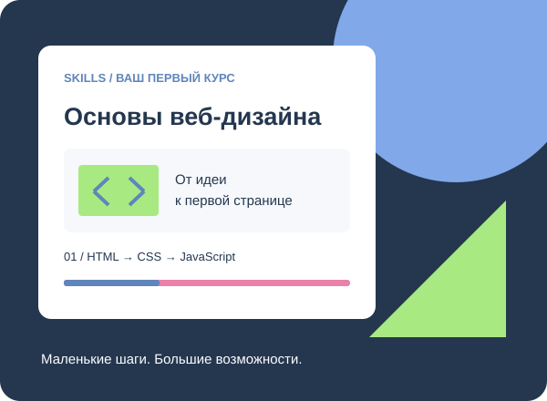

Понятный старт
Разбираем сложные темы на небольшие и последовательные шаги.
ВАШ ПЕРВЫЙ ШАГ В ВЕБ-РАЗРАБОТКЕ
От первой строки HTML до собственного сайта. Изучайте, пробуйте и собирайте свой проект по частям.
Открытый учебный проект. Начните без регистрации.

Разбираем сложные темы на небольшие и последовательные шаги.
После каждого урока создаём работающий элемент своего сайта.
Возвращайтесь к материалам и повторяйте упражнения в удобное время.
ПРАКТИКА С ПЕРВОГО УРОКА
Узнайте, как устроен HTML-документ, и закрепите материал коротким тестом.
Перейти к уроку →